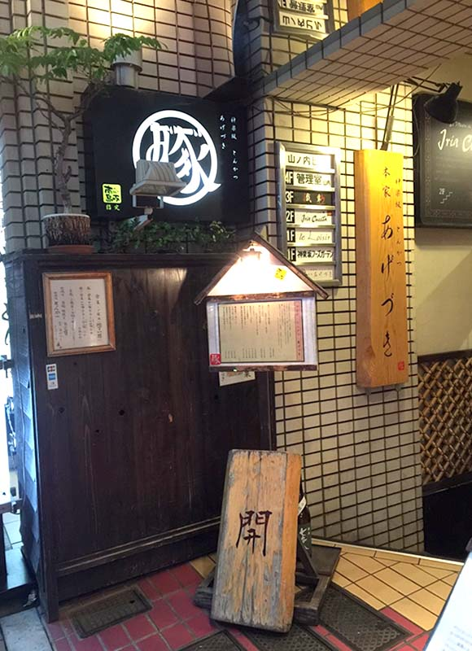
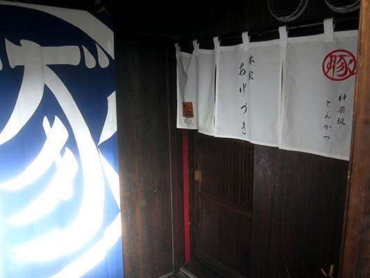
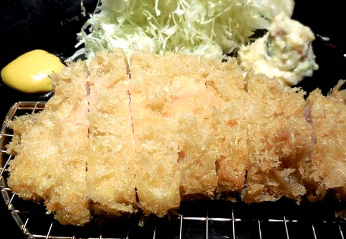

とろける大人の
ハンバーグ
下北沢古著街
カフェドパルファン
とんかつあげづき
東京大人味發見
Day3-2015.07.25
< 下 北 澤>
這間晚上六點前就已經在排隊，等了一段時間還好是很好吃的豬排店。
店名：神楽坂 とんかつ 本家 あげづき(AGEDUKI)
營業時間：11:30-15:00 ＆ 18:00-22:30(土曜日晚餐時段17:30~22:30，
日曜日及例假日晚餐時段17:30~21:00， 定休日-火曜日及每月第三個水曜日)
住址：東京都新宿區神楽坂3-2(山ノ内ビルB1)
網址：無
  
back